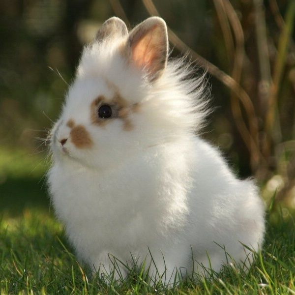
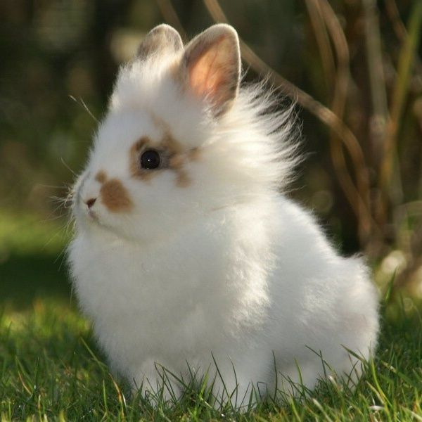

Conejos

El gato o gato doméstico (Felis silvestris catus) y coloquialmente llamado minino, michino, micho, mizo, miz, morrongo o morroño, es una subespecie de mamífero carnívoro de la familia Felidae. El gato está en convivencia cercana al ser humano desde hace unos 9500 años, periodo superior al estimado anteriormente, que oscilaba entre 3500 y 8000 años.

 
